Brazilian Six
Brazilian Six

Nossa equipe

Como administrador de recursos da escuderia, Davi precisou captar
recursos para financiar o projeto a partir do contato com diversas empresas. Além
disso, foi o responsável por organizar nosso orçamento e divisão de cotas.
Davi, através de seu carisma e habilidade de falar em público,
conseguiu estabelecer relações com as empresas e redigiu muito bem os e-mails,
além de ter conseguido todos os recursos necessários para a escuderia avançar
na competição.
Davi da Silva - Administrador e captador de recursos

Como líder da escuderia, Giovanna deveria manter a equipe organizada,
estabelecer prazos e cobrar a realização das tarefas, além de motivar o grupo e
resolver conflitos entre os membros.
Giovanna conseguiu estabelecer uma comunicação efetiva com
todos os participantes e garantiu que todas as áreas do projeto estavam
encaminhadas com sua autonomia e organização
Giovanna Fusco - Líder da equipe

Como engenheiro chefe da escuderia, Artur pesquisou muito sobre
aerodinâmica e outros conceitos físicos para inovar o carro da equipe e realizar
testes virtuais.
Artur tem facilidade com Física, e com a aquisição novos
conhecimentos através de pesquisa. Somado a sua criatividade, nosso
engenheiro de P&D conseguiu inovar bastante nosso carro.
Artur Paparounis - Engenheiro de pesquisa e desenvolvimento

Como designer 3D, Gustavo foi responsável por programar todo o carro
em CAD utilizando o Inventor. Ademais, sugeria também inovações para o carro.
Gustavo conseguiu aprender também na Internet como usar o
Inventor com sua facilidade de auto ensino. Ademais, seu contato prévio com
programação ajudou-o a desenvolver nosso carro de maneira mais rápida e com
qualidade.
Gustavo Theil - Designer 3D

Como diretora de Marketing da equipe, Catherina administrou as nossas
redes sociais e concluiu outras atividades para engajar a comunidade no projeto e
divulgar a escuderia.
Catherina usou da sua criatividade para propor ações inovadoras
de divulgação, como o uso das televisões da escola para engajar a comunidade.
Catherina Kuahara - Diretora de Marketing

Função: Como designer gráfica da escuderia, Lara tinha como responsabilidade
captar a identidade da equipe e transmiti-la através de todas as nossas
produções, como camiseta de competição, postagens, pintura do carro e estande.
Lara conseguiu impactar nosso público com o uso das nossas
cores, além de ter renovado nossa identidade para a temporada de 2019,
captando a essência do grupo.
Lara Ferraz - Designer gráfica

A primeira geração da Brazilian six, em 2018 conquistou o título nacional e foi para Singapura para representar o Brasil

Em 2019 a segunda geração venceu a competição regional

Ainda em 2019, a segunda geração atingiu também a primeira colocação na etapa nacional e vai representar o Brasil em Abu Dhabi!

Nossas parcerias
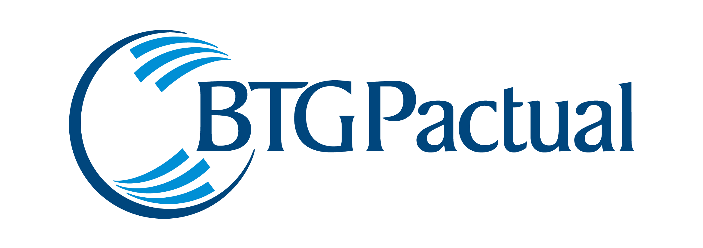
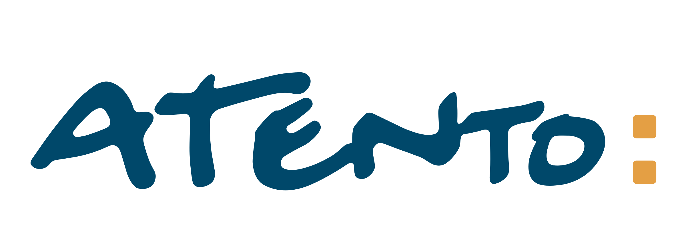
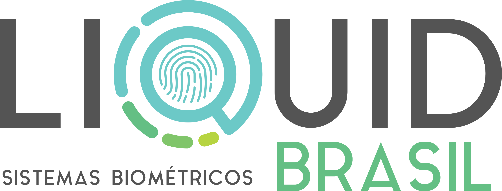
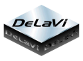
 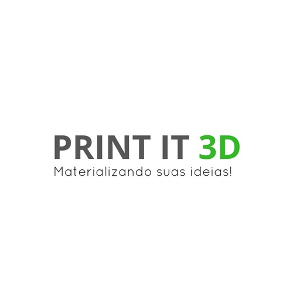
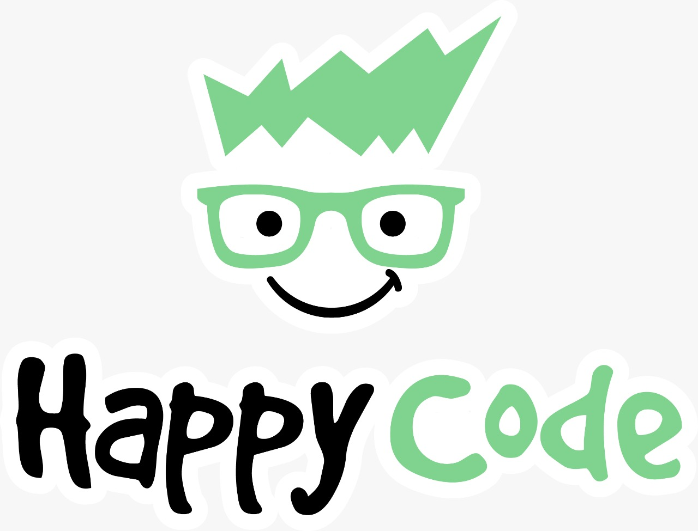
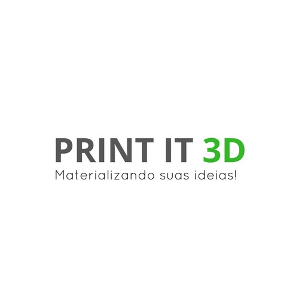
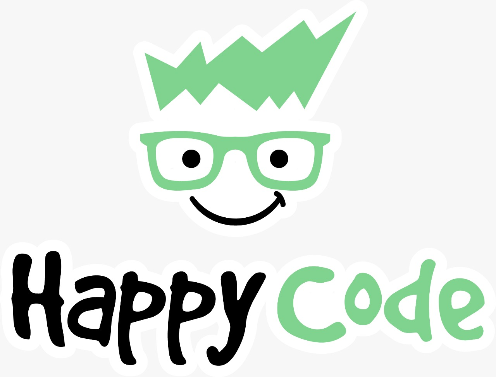

 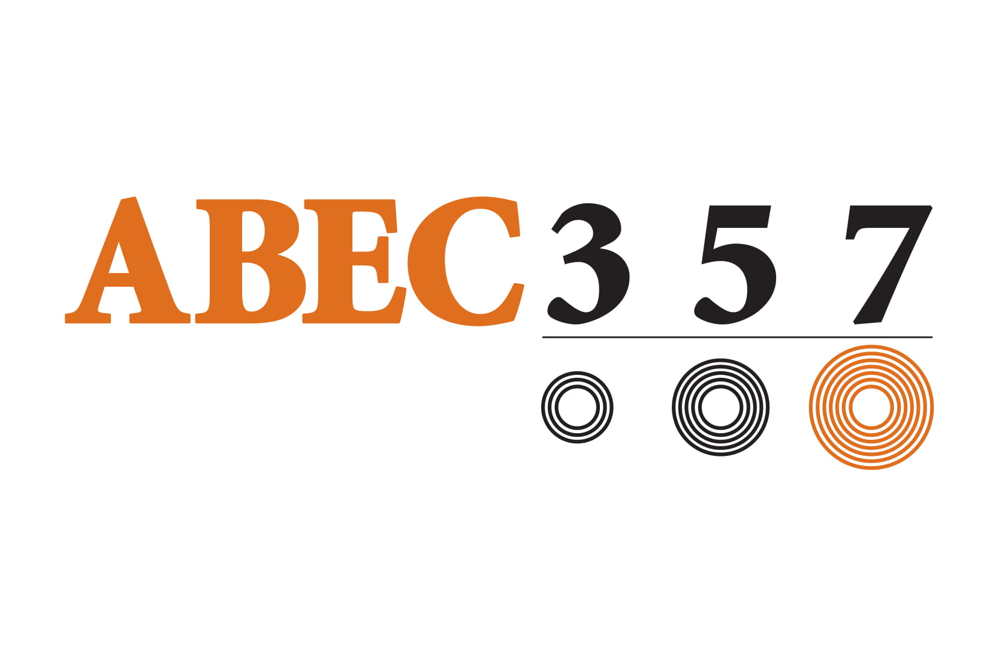
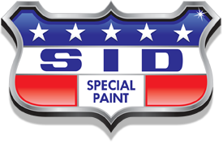
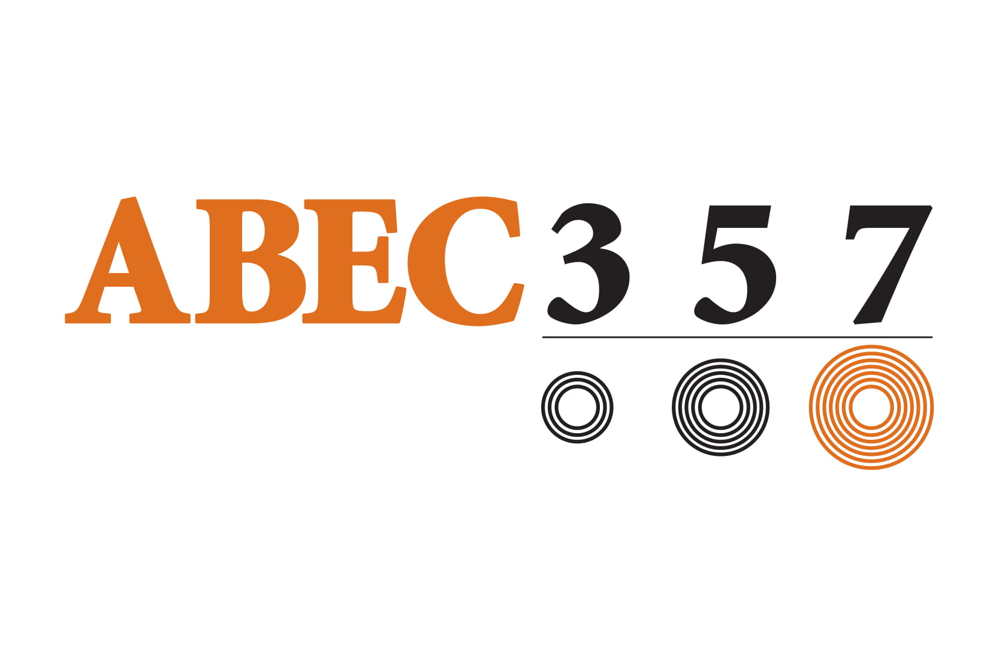
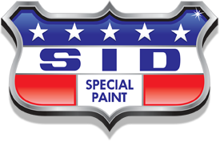
Nossos portfólios
Portfólios da nacional de 2019
Entre em contato!
Veja nossa página no Intagram!
 Veja nossa página no Facebook!
Veja nossa página no Facebook!
 Veja nossa página no Linkedin!
Veja nossa página no Linkedin!
 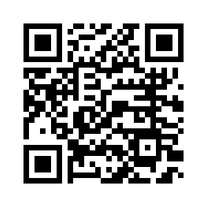
Mande um e-mail! (braziliansix@gmail.com)
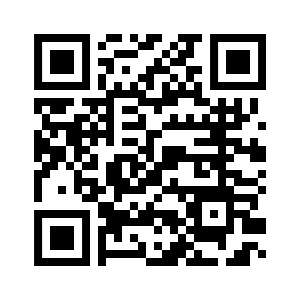
Mande um e-mail! (braziliansix@gmail.com)